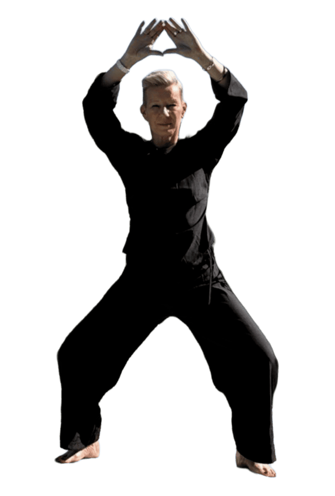
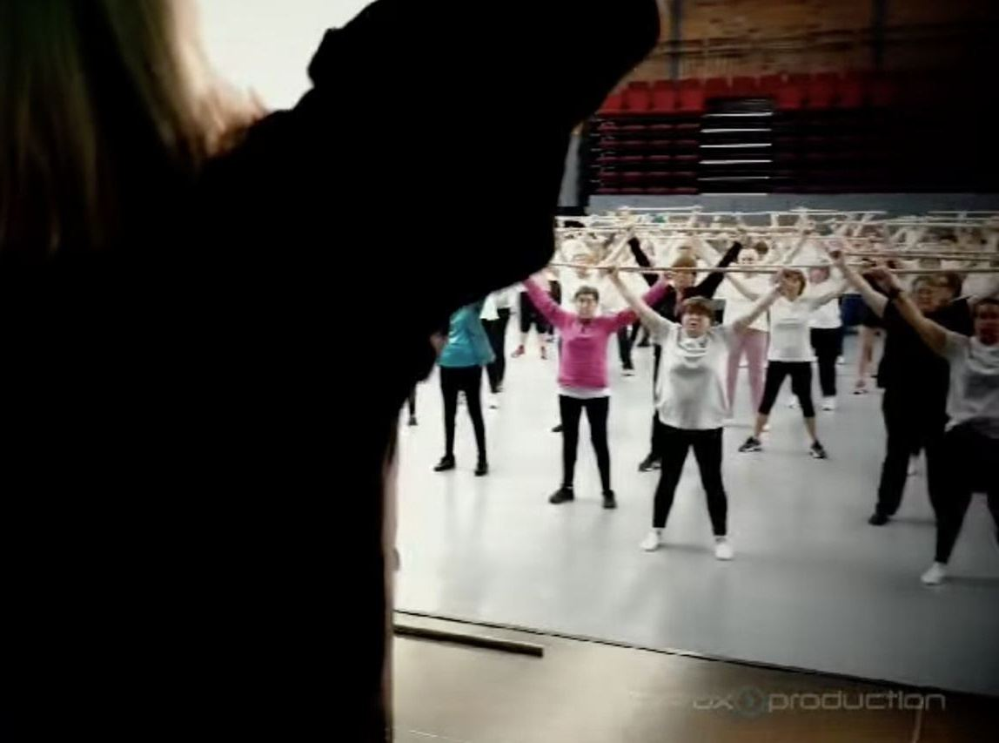

Tai-chi chuan
Mouvements lents et fluides, enchaînés comme un seul souffle.
Équilibre, coordination, prévention des chutes.
Quatre pigments (Tai-chi chuan, Yoga, Pilates et Qi gong) déposés sur un même bain puis réunis en une seule figure par un geste unique.

Association sportive · Saint-Laurent-du-Var
Une seule discipline, qui fusionne quatre traditions en un enchaînement continu, porté par une musique relaxante.
Mardi 17 h 45 · premier cours d'essai offert, sans engagement.
Zenway est une discipline unique créée par Raymond Holle : elle fusionne, en un seul mouvement continu, le Tai-chi chuan, le Yoga, le Pilates et le Qi gong, le tout porté par une musique relaxante. Ce n'est pas un enchaînement de quatre cours indépendants que l'on choisirait séparément, mais une seule pratique qui puise dans ces quatre traditions.
Cette discipline cherche l'harmonie entre l'esprit et le corps, l'équilibre entre la force et la douceur. Au sein de notre section de Saint-Laurent-du-Var, chaque séance devient un moment pour se recentrer, gagner en souplesse, en tonus et en sérénité.
Une seule séance, toujours les quatre ensemble. Zenway ne propose pas de cours à la carte : chaque séance hebdomadaire suit ce même enchaînement complet, du Tai-chi chuan au Qi gong, sans interruption.
Voici les quatre traditions dans lesquelles Zenway puise, dans l'ordre où elles se succèdent au cours de la séance. Chacune apporte sa part au même enchaînement continu.
Mouvements lents et fluides, enchaînés comme un seul souffle.
Équilibre, coordination, prévention des chutes.

Postures et respiration, pour relier le corps et l'esprit.
Souplesse, tonicité, gestion du stress.

Renforcement profond des muscles posturaux, en mouvements précis.
Gainage, posture, soulagement du dos.

Souffle et énergie vitale, en gestes très doux inspirés de la nature.
Vitalité, immunité, apaisement profond.
Une seule séance hebdomadaire, qui réunit toujours les quatre pratiques, au KMCS.
Premier cours d'essai offert, avant toute inscription.
Voir le lieuMardi
17 h 45 — 18 h 45
Séance Zenway · tous niveaux
KMCS, 357 chemin des Iscles, Saint-Laurent-du-Var
Début des cours le mardi 8 septembre
Les bienfaits de Zenway sont reconnus par des kinésithérapeutes et des médecins comme une approche efficace pour prendre soin de son corps — sans prérequis, et en respectant le rythme de chacun.
Une démarche tournée vers la prévention et l'autonomie, en complément naturel d'un suivi de santé, jamais en remplacement.

Présentations, démonstrations et moments capturés lors de nos séances et événements.

La séance en vidéo : présentation ZenwayLa chaîne YouTube de Béatrice réunit les replays des portes ouvertes et les démonstrations de l'enchaînement complet.
Voir toute la chaîneVotre adhésion et le règlement se font en quelques minutes, en ligne, via HelloAsso, la plateforme des associations françaises.
Inscription en ligne bientôt disponible — contactez-nous en attendant, par téléphone ou e-mail.
En ligne en 3 étapes : formule, coordonnées, règlement sécurisé — reçu immédiat par e-mail. Premier cours d'essai offert avant toute inscription, 0 € de frais pour l'association.
Venez partager un moment de détente & de zénitude